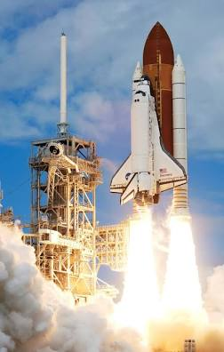
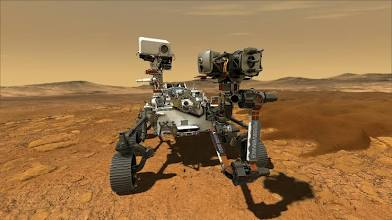

The Fact Library
This website is a unoffical wiki
Shovels
A shovel is a tool used for digging, lifting, and moving bulk materials, such as soil, coal, gravel, snow, sand, or ore. Most shovels are hand tools consisting of a broad blade fixed to a medium-length handle. Shovel blades are usually made of sheet steel or hard plastics and are very strong. Shovel handles are usually made of wood (especially specific varieties such as ash or maple) or glass-reinforced plastic (fiberglass).
Scp-096
Object Class: Euclid
Special Containment Procedures: SCP-096 is to be contained in its cell, a 5 m x 5 m x 5 m airtight steel cube, at all times. Weekly checks for any cracks or holes are mandatory. There are to be absolutely no video surveillance or optical tools of any kind inside SCP-096's cell. Security personnel will use pre-installed pressure sensors and laser detectors to ensure SCP-096's presence inside the cell.
Any and all photos, video, or recordings of SCP-096's likeness are strictly forbidden
Spaceships

A spacecraft is a vehicle that is designed to fly and operate in outer space.[1] Spacecraft are used for a variety of purposes, including communications, Earth observation, meteorology, navigation, space colonization, planetary exploration, and transportation of humans and cargo. All spacecraft except single-stage-to-orbit vehicles cannot get into space on their own, and require a launch vehicle (carrier rocket).
The Mars Rover
A Mars rover is a remote-controlled motor vehicle designed to travel on the surface of Mars. Rovers have several advantages over stationary landers: they examine more territory, they can be directed to interesting features, they can place themselves in sunny positions to weather winter months, and they can advance the knowledge of how to perform very remote robotic vehicle control. They serve a different purpose than orbital spacecraft like Mars Reconnaissance Orbiter. A more recent development is the Mars helicopter.